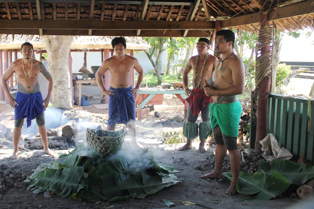
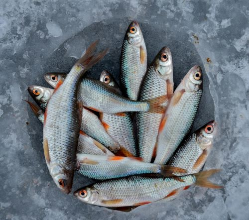
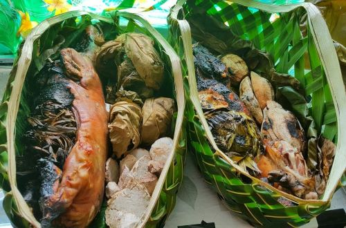
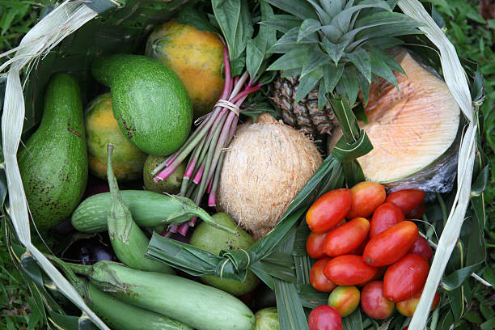
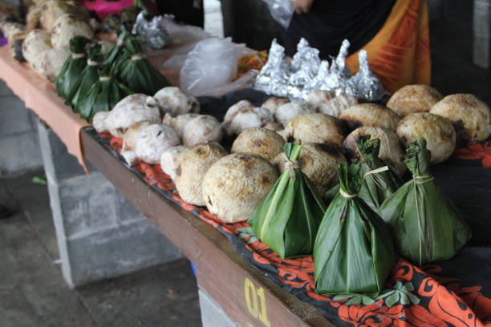

Food in samoa is just like any other country. Although, we have different ways of cooking food. A tradition that
has been passed on from generation to generation is that Samoan families depend on the land and sea to survive. We
plant, farm and grow livestocks to provide for our families.

Figure 1: Time-honored tradition: Cooking food in the umu, a traditional earth oven.

Figure 2: Fresh catch of the day: Delicious fish prepared for a family toona'i (feast).

Figure 3: Nothing beats umu (earth oven) with tasty pork, taro, and palusami.

Figure 4: Fresh from the garden: A colorful array of island vegetables.

Figure 5: Sweet and savory faausi: A traditional Samoan treat.